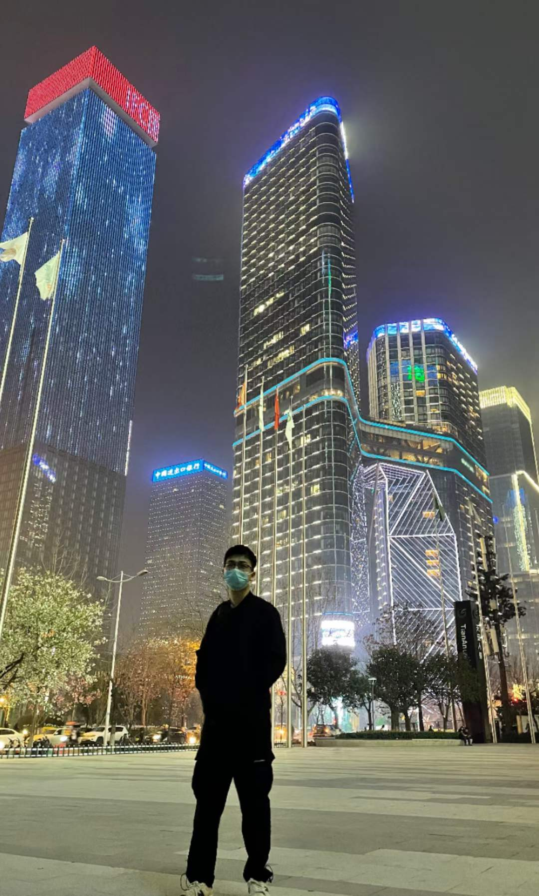
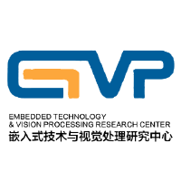

|
Tuo Wang
I am a Master student (postgraduate recommendation)in the School of Computer Science and Technology at Xidain University. I received my Bachelor's Degree from the Department of Software Engineering, Xidian University in the year of 2020.
My research interests lies at computer vision and deep learning, especially medical image process, know a little about natural language process.
Address: 2 of TaiBai South Road,Yanta District, Xi'an,
ShaanXi, P.R.China.
Motto: Keep calm and Carry on!
Email /
GitHub /
Blog /
|

|
|
Awards
- 2017, School-level
second model Prize(<10%).
- 2018,Second Prize of National Green Computing Competition (8th place).
- 2020, Leetcode top 200(about 1200+ Solutions).
|
Education
Xidian University, Xi'An, China
Master • Aug. 2020 to Jun. 2023 (expected)
Department of Computer Science
|

|
Xidian University, Xi'An, China
B.Eng. • Sep. 2016 to Jul. 2020
Department of Computer Science
|
|
|
- Program language: Proficiency in C++, including STL, concurrency, and network programming.
Familiarity with python programming.
- Tools: latex,Git
- CET4: 465
- CET6: 509
|

|
Currently I am a master student of the (Embedded Technology and Visual Processing Research Center , Xidian Univ. Xidian University). I am mainly responsible for the computer vision in the lab.
|
|
{kind=link}